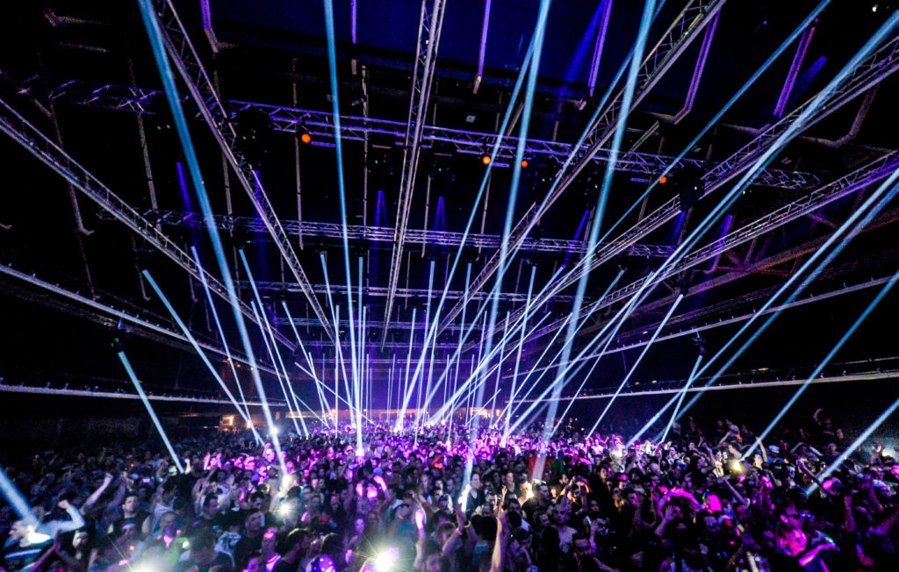

O techno é uma das vertentes mais adoradas da música eletrônica. Com artistas incríveis ao redor do globo,
os festivais de techno costumam fascinar os amantes do estilo.
Foi nos anos 80, em Detroit, nos Estados Unidos, que Juan Atkins, Derrick May e Kevin Saunderson,
que passariam a ser conhecidos como The Belleville Three, criaram esse novo som.
Eram loops de bateria eletrônica que, repetidos, formavam esse efeito hipnótico e levam o
público a um transe individual – e coletivo.
Mesmo que o objetivo inicial não fosse esse, a cena techno abraçou grupos que eram excluídos pela
sociedade da época como negros e LGBTQ+. Em algumas festas, por exemplo, transexuais não pagavam
ingresso. E nesse ambiente todos se sentiam acolhidos. Atualmente, no Brasil,
o techno representa um pouco da rebeldia que o punk rock representou nos anos 80.
As festas e festivais de techno têm ganhado cada vez mais adeptos e ocupado espaços nas cidades.
Sim, o techno teve e ainda tem impacto em momentos importantes da sociedade.
Festivais pelo Mundo
País
Número de Festivais
Alemanha
20
Holanda
12
Reino Unido
15
Suíça
8
Portufgal
6
Time Warp
Um dos festivais de techno mais antigos do mundo, o alemão Time Warp já é um adulto de 20 anos
e já segue explorando outras partes do globo – como uma edição em São Paulo (também).
Com base no techno, o festival também oferece artistas de outras vertentes como o
deep house e o minimal.
Conheça mais
DGTL
Com edições de sucesso em cidades como Amsterdã, Barcelona e
São Paulo, o DGTL já é consagrado e
arrasta uma multidão (de djs e fãs) por onde passa. Com foco no techno, o festival também puxa
uma asinha pro house e algumas de suas vertentes.
Conheça mais